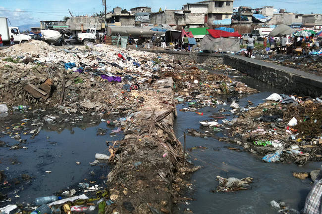

Bienvenue sur le site du TPE de Alexandre Cros et Pierre Lévêque sur le Choléra. Vous pourrez trouver sur le site les différentes sections qui apportent une explication à notre problématique qui est :
Comment se fait il que l'épidémie de Choléra survenue à Haïti en 2010, a épargné la République Dominicaine, état frontalier ?
ainsi qu'une liste de définitions pour mieux comprendre le vocabulaire employé (les définitions sont en gras et cliquer dessus mène à la page des définitions) et un quizz pour tester ses connaissances au préalable ou après avoir naviguer sur le site. Sur-ce nous vous souhaitons une bonne expérience sur notre site.
Les raisons qui nous ont poussés à choisir ce sujet
Nous avons choisis cette problématique car à la base nous voulions nous intéresser à l'évolution des maladies dans le temps mais au fur et à mesure de notre réflexion nous nous sommes intéressés au Choléra et il se trouve qu'une épidémie récente de Choléra a frappée Haïti ce qui en fait un sujet d'actualité.
Le thème
Éthique et responsabilité est le thème que nous avons choisis. Les raisons qui expliquent le choix de ce thème sont premièrement l'aide apportés aux malades et aux raisons éthiques (notre morale) qui nous pousse à aider les populations démunis ainsi que la responsabilité des casques bleus népalais qui sont responsables d'avoir apporter la maladie à Haïti en 2010 suite aux tremblements de terre en tant que porteurs sains dans leur selles.
